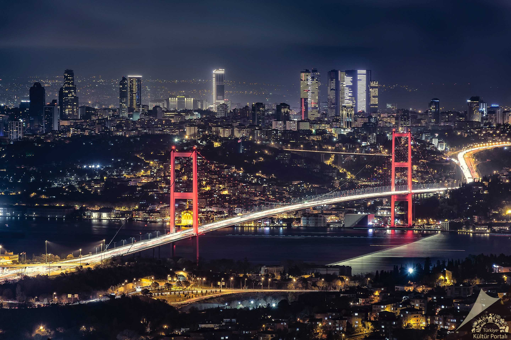

İstanbul, tarihi ve kültürel zenginlikleriyle ünlü bir şehirdir. Boğaz, şehri ikiye böler ve Asya ile Avrupa kıtalarını birbirine bağlar.
Boğaz boyunca yürüyüş yaparken, tarihi yalıları, köprüleri ve muhteşem manzaraları görebilirsiniz.
Boğazın her iki yakasında da birçok kafe ve restoran bulunur, bu yüzden burada oturup çay içmek veya yemek yemek harika bir deneyim olabilir.

NOT: Bu harita OpenLayers ile gösterilmiştir.